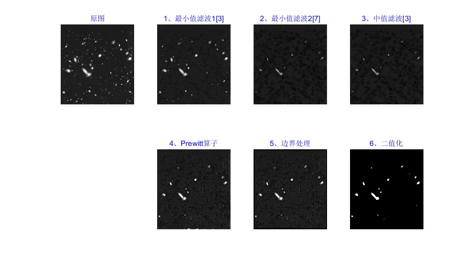
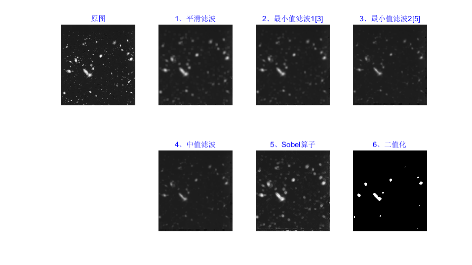

Contents
初始化
clear
clc
X_src=imread('LBimage2.bmp');
处理方式一
X_min1=MinFilter(double(X_src),3);
X_min2=MinFilter(X_min1,7);
X_med=MedFilter(X_min2,3);
X_prewitt=Prewitt(double(X_med));
X_edge = zeros(size(X_prewitt));
[height,width]=size(X_prewitt);
X_edge(7:height-6,7:width-6) = X_prewitt(7:height-6,7:width-6);
X_bw=img2bw(X_edge,0.4);
h1 = figure('name','滤波方式1','NumberTitle','off');
set(h1,'units','normalized','position',[0.1 0.1 0.7 0.7]);
subplot(2,4,1); imshow(uint8(X_src)); title('\fontsize{11}\color{blue}原图');
subplot(2,4,2); imshow(uint8(X_min1)); title('\fontsize{11}\color{blue}1、最小值滤波1[3]');
subplot(2,4,3); imshow(uint8(X_min2)); title('\fontsize{11}\color{blue}2、最小值滤波2[7]');
subplot(2,4,4); imshow(uint8(X_med)); title('\fontsize{11}\color{blue}3、中值滤波[3]');
subplot(2,4,6); imshow(uint8(X_prewitt)); title('\fontsize{11}\color{blue}4、Prewitt算子');
subplot(2,4,7); imshow(uint8(X_edge)); title('\fontsize{11}\color{blue}5、边界处理');
subplot(2,4,8); imshow(uint8(X_bw)); title('\fontsize{11}\color{blue}6、二值化');

处理方式二
Y_ave=Average(X_src,15);
Y_min1=MinFilter(Y_ave,3);
Y_min2=MinFilter(Y_min1,5);
Y_med=MedFilter(Y_min2,5);
Y_sobel=Sobel(double(Y_med));
Y_edge = zeros(size(Y_sobel));
[height,width]=size(Y_sobel);
Y_edge(7:height-6,7:width-6) = Y_sobel(7:height-6,7:width-6);
Y_bw=img2bw(Y_edge,0.5);
h2 = figure('name','滤波方式2','NumberTitle','off');
set(h2,'units','normalized','position',[0.1 0.1 0.7 0.7]);
subplot(2,4,1); imshow(uint8(X_src)); title('\fontsize{11}\color{blue}原图');
subplot(2,4,2); imshow(uint8(Y_ave)); title('\fontsize{11}\color{blue}1、平滑滤波');
subplot(2,4,3); imshow(uint8(Y_min1)); title('\fontsize{11}\color{blue}2、最小值滤波1[3]');
subplot(2,4,4); imshow(uint8(Y_min2)); title('\fontsize{11}\color{blue}3、最小值滤波2[5]');
subplot(2,4,6); imshow(uint8(Y_med)); title('\fontsize{11}\color{blue}4、中值滤波');
subplot(2,4,7); imshow(uint8(Y_sobel)); title('\fontsize{11}\color{blue}5、Sobel算子');
subplot(2,4,8); imshow(uint8(Y_bw)); title('\fontsize{11}\color{blue}6、二值化');
